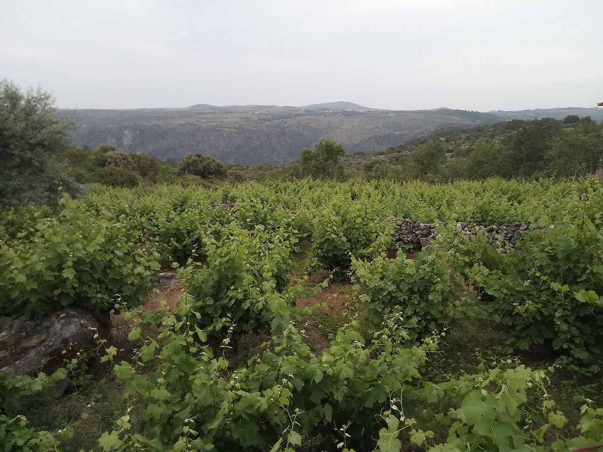

RED
Arribes is a designation of origin recognised in 2007 in the Duero canyon, on the border between Spain and Portugal, in the provinces of Zamora and Salamanca. It is notable for the native Juan García grape and its terraced vineyards.

Viticulture in the Arribes del Duero is old and has traditionally been part of a rural subsistence economy in which vines shared the terraces with olive, almond and fruit trees. Towns such as Fermoselle preserve numerous cellars dug into the rock beneath the houses, evidence of a long winemaking tradition. After decades in which many vineyards were abandoned because of emigration and the difficulty of cultivation, the area was recognised first as a Vino de la Tierra and then, in 2007, as a Designation of Origin, which encouraged the recovery of local varieties and old vineyards.
The designation extends along the border section of the Duero and some of its tributaries, such as the Tormes and the Huebra, in the west of the provinces of Zamora and Salamanca, largely within the Arribes del Duero Natural Park. The rivers have carved deep canyons whose slopes are stepped into terraces. On the floors and sides of these canyons there is a Mediterranean-type microclimate, milder than that of the surrounding plateau, with gentle winters, hot summers and few frosts, contrasting with the continental climate of the uplands.
Shallow, poor soils derived from granite, with a sandy texture, predominate, especially on the Zamora side, while slate is common in some parts of Salamanca. On the terraces the soil is usually held up by dry-stone walls.
The most characteristic variety is Juan García, a native red grape that gives wines of medium colour, red fruit aromas, spicy notes and fresh acidity. Other local varieties are also grown, such as Rufete and Bruñal, as well as Tempranillo and Grenache. Among the whites, the most notable are Malvasía, also called Doña Blanca here, Verdejo and Albillo. Producers make young and barrel-aged reds, rosés and whites. Juan García reds tend to be light or medium-bodied and fresher than those of other parts of the Castilian Duero.
The terrain often means that work must be done by hand, on small plots that are hard to reach. Old bush vines are common, frequently interplanted with different varieties in the same plot, which makes up a viticultural heritage of great interest. The landscape of terraces, rocky outcrops and vines suspended above the rivers is part of the identity of this designation.